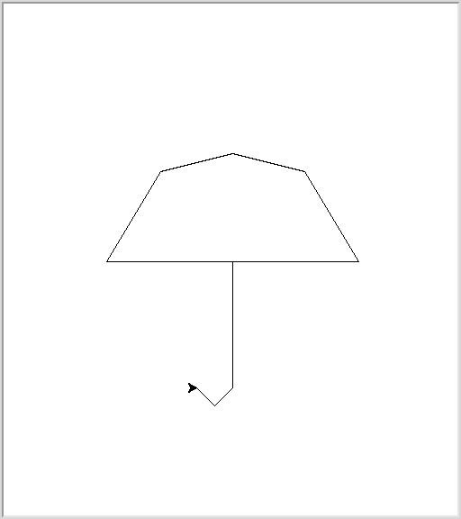

|
Copie du contenu du terminal vu en cours
Exercice 1 - Générateur de texte
Écrire une fonction Python qui génère une liste des mots consécutifs d'un texte.
>>> texte = "Ecrire un programme Python qui genere une liste des mots consecutifs d'un texte. Une autre phrase de ce texte. En une derniere."
>>> consecutifs(texte)
[('Ecrire', 'un'), ('un', 'programme'), ('programme', 'Python'), ('Python', 'qui'), ('qui', 'genere'), ('genere', 'une'), ('une', 'liste'), ('liste', 'des'), ('des', 'mots'), ('mots', 'consecutifs'), ('consecutifs', "d'un"), ("d'un", 'texte.'), ('texte.', 'Une'), ('Une', 'autre'), ('autre', 'phrase'), ('phrase', 'de'), ('de', 'ce'), ('ce', 'texte.'), ('texte.', 'En'), ('En', 'une'), ('une', 'derniere.')]
(Supposer que "mots" veux dire des chaines de caractères séparés d'espaces.)
Un fichier appelé mots.py contient
def consecutifs(texte):
mots = texte.split()
mots_consecutifs = []
for i in range(len(mots) - 1):
mots_consecutifs.append((mots[i], mots[i+1]))
return mots_consecutifs
import mots
nom_de_fichier = raw_input()
texte = open(nom_de_fichier).read()
for premier, deuxieme in mots.consecutifs(texte):
print "%s, %s" % (premier, deuxieme)
Ajouter à votre module une fonction Python qui prends un texte et génère un dictionnaire où les clés sont les mots du texte et les valeurs pour un mot sont les mots qui peuvent le suivre dans le texte.
>>> suivant = mot_suivant(texte)
>>> suivant["une"]
['liste', 'derniere.']
Un fichier appelé mots.py contient
def consecutifs(texte):
mots = texte.split()
mots_consecutifs = []
for i in range(len(mots) - 1):
mots_consecutifs.append((mots[i], mots[i+1]))
return mots_consecutifs
def mot_suivant(texte):
suivant = {}
for mot1, mot2 in consecutifs(texte):
if mot1 in suivant:
suivant[mot1].append(mot2)
else:
suivant[mot1] = [mot2]
return suivant
Écrire un programme Python qui prends le nom d'un fichier en entrée, lit le texte dans ce fichier et écrit dans un deuxième fichier un texte dont tous les mots qui se suivent apparaissent comme mots consécutifs dans le texte original.
Ce deuxième texte devrait être générer de façon aléatoire (de sorte qu'on obtienne très probablement un texte différent à chaque lancée du programme sur un même texte).
Vous pouvez essayer votre programme avec ce fichier comme entrée, par exemple.
import mots
import random
def genere_texte(nom_fichier, longueur_max):
texte = open(nom_fichier).read()
suivant = mots.mot_suivant(texte)
mot = random.choice(suivant.keys())
texte = mot
for i in range(longueur_max):
if mot in suivant:
mot = random.choice(suivant[mot])
texte = texte + " " + mot
else:
break
return texte
longueur_max = 1000
nom_fichier = "Poe.txt"
nouveau_texte = genere_texte(nom_fichier, longueur_max)
open("nouveau_texte.txt", "w").write(nouveau_texte)
* Changer le programme (et module) précédent pour que le texte en sortie et le texte en entrée ont les même triplets consécutifs.
Exercice 2 - Classe Point
Pour cet exercice, nous allons ajouter des attributs et méthodes à la classe Point vu en cours.
class Point:
def __init__(self, x, y):
self.x = x
self.y = y
def distance(self, autre_point):
distance_carre = (self.x - autre_point.x)**2 + (self.y - autre_point.y)**2
return distance_carre**0.5
Écrire une méthode tuple qui retourne un tuple de des coordonnées du point.
>>> p = Point(3, 4)
>>> p.tuple()
(3, 4)
Écrire une méthode copy qui retourne une copie du point (ensuite, lorsqu'on modifie un des deux point, l'autre point ne devrait pas être modifiée). Écrire une méthode translater qui prends deux nombres x et y en paramètre (en plus du Point) et déplace le point de (x, y).
>>> p = Point(3, 4)
>>> p.translater(1, 3)
>>> p.tuple()
(4, 7)
Écrire une méthode agrandir qui prends un nombres facteur en paramètre (en plus du Point) et donne le nouvel emplacement du point si agrandi le plan d'un facteur facteur.
>>> p = Point(3, 4)
>>> p.agrandir(2.5)
>>> p.tuple()
(7.5, 10.0)
Écrire une fonction (pas un méthode cette fois-ci) qui prends une liste de points, les considèrent comme vecteur et retourne la position finale si on suivait ces vecteurs les unes à la suite des autres (en commençant à l'origine).
Écrire une autre fonction points_intermediaires qui renvoie les points intermédiaires visitées de cette façon.
Sauvegarder le tout dans un module point.py et tester vos fonctions avec le script suivant.
from point import Point, points_intermediaires
import turtle
points = [Point(140, 0),
Point(-60, 100),
Point(-80, 20),
Point(-80, -20),
Point(-60, -100),
Point(140, 0),
Point(0, -140),
Point(-20, -20),
Point(-20, 20)]
stops = points_intermediaires(points)
t = turtle.Turtle()
for point in stops:
t.goto(point.tuple())
Réessayer en agrandissant le plan (c'est-à-dire tous les points) d'un facteur 2.
Quel est la distance totale parcourue?
class Point:
def __init__(self, x, y):
self.x = x
self.y = y
def distance(self, autre_point):
distance_carre = (self.x - autre_point.x)**2 + (self.y - autre_point.y)**2
return distance_carre**0.5
def tuple(self):
return (self.x, self.y)
def copy(self):
return Point(self.x, self.y)
def translater(self, x, y):
self.x += x
self.y += y
def agrandir(self, facteur):
self.x *= facteur
self.y *= facteur
def dernier_point(points):
point = Point(0, 0)
for vecteur in points:
point.translater(vecteur.x, vecteur.y)
return point
def points_intermediaires(points):
point = Point(0, 0)
intermediaires = []
for vecteur in points:
point.translater(vecteur.x, vecteur.y)
intermediaires.append(point.copy())
return intermediaires

|